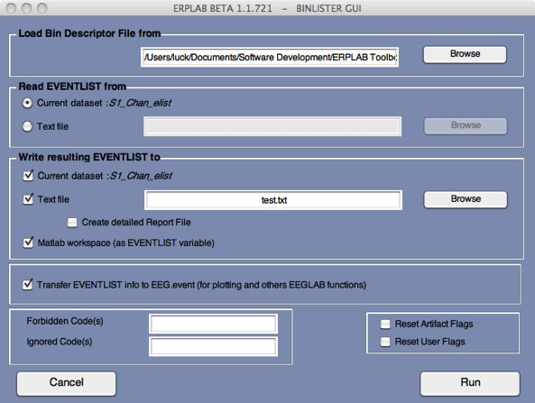
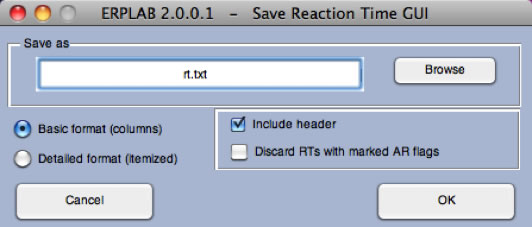

Up to this point, we have assigned events to bins when creating the EventList structure. This is fine for very simple experiments, but it is insufficient for most real studies. We will now consider how events are assigned to bins for typical studies using the BINLISTER routine (see the ERPLAB User's Manual for more details).
To begin this example, select the "S1_Chan" dataset. The first step is to create an EventList. When we did this before, we used the advanced method, which allows you to provide a label for each event code and to assign each code to a bin. This time we will use the simple method, which just creates the EventList with whatever event codes or event labels are in the dataset. To do this, select ERPLAB > EventList > Create EEG EventList – Basic. It will put up a small window giving you a few basic options, but you should just click Create. You can then accept the default name for the new dataset (S1_Chan_elist). You can verify that the EventList was created by typing EEG.EVENTLIST in the Matlab command window.
Equivalent Script Command:
%Load S1_Chan
EEG = pop_loadset( 'filename', 'S1_Chan.set', 'filepath', '/Users/etfoo/Desktop/tutorial_script/');
%The following command uses Matlab's Current Folder
EEG = pop_loadset( 'filename', 'S1_Chan.set');
%Create Basic Eventlist
%Creates basic eventlist Add code -99 for 'boundary' events
EEG = pop_creabasiceventlist(EEG, 'Newboundary', {-99}, 'Stringboundary', {'boundary'}, 'Warning', 'on');
Now we are ready to start using BINLISTER. The general approach used by BINLISTER is as follows. Using the Matlab editor, you will create a text file that provides an abstract description of the kinds of event sequences that should be assigned to each bin (e.g., event code 20 preceded by event code 51 or 52 and followed 200-1500 ms later by event code 101). The abstract description for a given bin is called a bin descriptor, and the file containing the bin descriptors is called a bin descriptor file. BINLISTER reads this file, and then scans the EVENTLIST structure. Each event is compared with each of the bin descriptors. If it matches one or more of the bin descriptors, the list of bins for that event is updated.
The first (and hardest) step is to create the bin descriptor file. You can do this with Matlab's built-in text editor. Other text editors may insert hidden characters that can cause problems, so we recommend against using other text editors unless you really know what you're doing.
As a reminder, here is a table showing the stimulus event codes. The event codes for responses in this experiment indicated whether the response was correct (event code = 9) or incorrect (event code = 8) rather than directly indicating whether a left-hand or right-hand response was made.
Event Code |
Category |
Probability |
Correct Response |
11 |
Letter |
Frequent |
Left Hand |
21 |
Digit |
Rare |
Right Hand |
112 |
Letter |
Rare |
Left Hand |
122 |
Digit |
Frequent |
Right Hand |
12 |
Letter |
Rare |
Right Hand |
22 |
Digit |
Frequent |
Left Hand |
111 |
Letter |
Frequent |
Right Hand |
121 |
Digit |
Rare |
Left Hand |
We will start with an example in which we collapse all the rare stimuli together into one bin (Bin 1) and all of the frequent stimuli together in a different bin (Bin 2). And we'll include only trials in which the stimulus was followed by a correct response. Here are the bin descriptors for these two bins.
bin 1
Frequent followed by correct response
.{11;122;22;111}{9}
bin 2
Rare followed by correct response
.{21;112;12;121}{9}
Each pair of curly brackets ("{}") defines an event list, which specifies one or more events that must occur at a given sequential position. The event list following the dot specifies the identity of the time-locking event, and the following event lists define the events that must follow the time-locking event. In Bin 1, for example, we are looking for any frequent stimulus (event codes 11, 122, 22, or 111) followed by a correct response event code (9). Because the event list immediately after the dot contains the list of stimulus event codes, the stimulus event code will be the time-locking point. In this example, response-locked averages could be specified by placing the dot after the stimulus event list and before the response event list (e.g., "{11;122;22;111}.{9}").
Bins must be specified in order, beginning with Bin 1. The line after the bin number is the bin description, and it is used to help you keep track of what is in each bin.
To try assigning events to bins, type the two bin descriptors shown above into a text file and save it as binlister_demo_1.txt (note: this file may already be present in the S1 folder). Then select ERPLAB > Assign Bins (BINLISTER) (S1_Chan_elist should be the active dataset). The window shown in the screenshot below will appear. Load the bin descriptor file that you just created, and type "test.txt" into the name of the text file for writing the results. Ordinarily you will not need to save the results to a text file, but this will help you see exactly how BINLISTER is working. Now make sure that everything else is set as shown in the screenshot, and then click RUN.

BINLISTER will take some time to go through all of the events in the EventList and create a new EventList with the new bin assignments. A new dataset will be created with the updated EventList. If you open test.txt with Matlab's text editor, you will see how it assigned the stimulus events to Bin 1 or Bin 2. For example, the first event code is a frequent stimulus and was therefore assigned to Bin 1. The second event code is a response, and it was not assigned to any bins. The third event code is a rare stimulus that was assigned to Bin 2. Note that event #73 was a frequent stimulus, but it was followed by an event code 8 (an incorrect response), so it was not assigned to any bins.
If you wish, you can now epoch the data, perform artifact detection, and create averaged ERPs for these two bins.
Equivalent Script Command:
%Loads binlister file from selected drive
%/Users/etfoo/Desktop/tutorial_script/binlister demo 1.txt
%Save file as test.txt
%Note that you will need to replace the path with the actual location in your file system
EEG = pop_binlister( EEG,'BDF', /Users/etfoo/Desktop/tutorial_script/binlister demo 1.txt', 'ImportEL' , 'no', 'Saveas', 'on', 'SendEL2', 'EEG&Text', 'Warning', 'on');
%The following command uses Matlab's Current Folder
EEG = pop_binlister( EEG,'BDF', 'binlister demo 1.txt' , 'ExportEL' , 'test.txt', 'ImportEL', 'no', 'Saveas', 'on', 'SendEL2', , 'EEG&Text', 'Warning', 'on');
% Type 'help pop_binlister' to see a description of all the parameters
Now let's try a slightly more complicated example. This time we will eliminate trials preceded by a rare stimulus, whether the response to this stimulus was correct or incorrect (while still requiring the current stimulus to be followed by a correct response). That is, we want to see the following sequence for a frequent stimulus: frequent stimulus; correct or incorrect response; frequent stimulus; correct response (and we are time-locking to the second frequent stimulus in this sequence). Similarly, we want to see the following sequence for a rare stimulus: frequent stimulus; correct or incorrect response; rare stimulus; correct response (and this time we are time-locking to the rare stimulus).
To implement this, create a new text file called binlister_demo_2.txt (this may already be present in the folder) and put the following event descriptors in it:
bin 1
Frequent preceded by frequent and followed by correct response
{11;122;22;111}{8;9}.{11;122;22;111}{9}
bin 2
Rare preceded by frequent and followed by correct response
{11;122;22;111}{8;9}.{21;112;12;121}{9}
Run BINLISTER using this new bin descriptor file. If the active dataset is the one you created by running BINLISTER in the previous example, you will get a warning message asking you if you wish to overwrite the previous bin assignments (you can say yes). If you look at the EventList in test.txt, you will see that stimuli preceded by a rare stimulus (and the response to the rare stimulus) are no longer assigned to any bins.
Equivalent Script Command:
%Loads binlister file from selected drive
%/Users/etfoo/Desktop/tutorial_script/binlister demo 2.txt
%Save output file as test.txt
%Note that you will need to replace the path with the actual location in your file system
EEG = pop_binlister( EEG , 'BDF' , '/Users/etfoo/Desktop/tutorial_script/binlister demo 2.txt', 'ExportEL' , '/Users/etfoo/Desktop/tutorial_script/test.txt', 'ImportEL', 'no', 'Saveas', 'on', 'SendEL2', 'EEG&Text', 'Warning', 'on' );
%The following command uses Matlab's Current Folder
EEG = pop_binlister( EEG, 'binlister_demo_2.txt', 'no', 'test.txt', 0, [], [], 0, 2, 0);
It is often desirable to specify the time period of a response relative to a stimulus. You can do this in the bin descriptor file by using the t<start-stop> syntax. We could change our first example to look for a stimulus followed by a response with 200-1000 ms, as follows:
bin 1
Frequent followed by correct response
.{11;122;22;111}{t<200-1000>9}
bin 2
Rare followed by correct response
.{21;112;12;121}{ t<200-1000>9}
When you specify a time period for an event list, this is called a time-conditioned event list. Ordinarily, the events in the EventList structure must be in exactly the order specified by an event descriptor to be considered a match. For example, when the event descriptor is "{11;122;22;111}{8;9}.{21;112;12;121}{9}", the following sequences of event codes would be successfully assigned to this bin: 11->8->21->9, 22->9->12->9, 122->9->12->9. However, if the subject accidentally pressed the response button twice, yielding the sequence 11->8->8->21->9, this would not match the event descriptor, and this sequence would not be assigned to the bin.
However, with a time-conditioned event list, other event codes can be present without disrupting the assignment of an event to a bin. With the event descriptor ".{11;122;22;111}{t<200-1000>9}", the sequence of event codes 11->1->9 would match as long as the 9 occurred 200-1000 ms after the 11.
Imagine that subjects in an experiment occasionally made the incorrect response and then followed this with the correct response. For example, you might see the sequence 11->8->9 (frequent stimulus followed by incorrect response followed by correct response). This would still match the bin descriptor ".{11;122;22;111}{t<200-1000>9}" as long as the 9 occurred 200-1000 ms after the stimulus. To avoid this situation, you can use the following bin descriptors (which can be found in the file "binlister_demo_3.txt"):
bin 1
Frequent followed by correct response without incorrect response
.{11;122;22;111}{~t<200-1000>8}{t<200-1000>9}
bin 2
Rare followed by correct response without incorrect response
.{21;112;12;121}{~ t<200-1000>8}{t<200-1000>9}
The tilde (~) character means "not". Thus, in this example, we are looking for a stimulus that is not followed by an 8 between 200 and 1000 ms and is followed by a 9 between 200 and 1000 ms. Go ahead and try running BINLISTER with the bin descriptor file "binlister demo 3.txt".
If you would like to save the reaction times (RTs) associated with each trial of each type, you can do this by adding :rt<"variable_name"> following the event codes associated with responses. For example, you can add this to our current example in the following manner (see binlister_demo_4.txt):
bin 1
Frequent followed by correct response without incorrect response
.{11;122;22;111}{~t<200-1000>8}{t<200-1000>9:rt<"Frequent RT">}
bin 2
Rare followed by correct response without incorrect response
.{21;112;12;121}{~ t<200-1000>8}{t<200-1000>9:rt<"Rare RT">}
In bin 1, this will cause the amount of time between the time-locking event and event code 9 to be stored to a variable named "Frequent RT". In bin 2, this will cause the amount of time between the time-locking event and event code 9 to be stored to a variable named "Rare RT". These variables are stored within the bdf field of the EVENTLIST variable. Three fields are used. EVENTLIST.bdf.rtindex stores the number of variables (e.g., 2 in this example). EVENTLIST.bdf.rtname stores the names of the variables. EVENTLIST.bdf.rt stores the individual RT values for each variable.
You can access these fields from a script, or you can use ERPLAB>EventList>Export Reaction Times to Text>From EEG to save the values in a text file, which brings up the window shown in the screenshot below. This window allows you to specify the filename and the organization of the information saved in the file. There are two formats, basic and detailed.

The basic format contains N columns, one for each of the different RT labels you specified in the bin descriptor file. The RTs in a column are the single-trial RTs, in order of occurrence, corresponding to a given label (see screenshot below). Because there may be more occurrences of some types of RTs than others, NaN (not a number) is used in a column when there are no more occurrences of that RT left in the file. The label for each column is provided if Include header is checked. This format makes it easy to compute the mean RT (or median, SD, etc.) for a given trial type.
Frequent_RT Rare_RT
608.000 507.999
532.000 552.000
601.999 615.999
441.999 456.001
379.999 634.003
488.001 568.001
507.999 700.001
Note that the labels don't always line up nicely with the columns of numbers. This is because tabs are used between each column, and this doesn't look nice with standard tab width unless the labels are very short. However, the file will look great if you open it in Excel.
The detailed format contains one reaction time value on each trial. This format is useful for making Excel PivotTables. The HomeCode value is the event code of the home item in the bin descriptor (usually the stimulus), and the EvalCode value is the event code of the item to which the ":rt<label>" string was attached in the bin descriptor. The RT is the difference between the times of these two events. The Item value is the position of the EvalCode event code in the EVENTLIST. The Bin# and BinLab values are the bin number and bin label of the bin to which the event was assigned. The label for each column is provided if Include header is checked.
Item RTime HomeCode EvalCode Bin# BinLab
2 608.000 22 9 1 Frequent_RT
4 507.999 12 9 2 Rare_RT
6 532.000 22 9 1 Frequent_RT
8 601.999 22 9 1 Frequent_RT
10 441.999 22 9 1 Frequent_RT
12 379.999 22 9 1 Frequent_RT
14 488.001 22 9 1 Frequent_RT
If you have already performed artifact detection before exporting the RTs, you can exclude trials for which an artifact was detected by selecting Discard RTs with marked AR flags.
Equivalent Script Command:
%Export Reaction Times to Text from EEG
%Path is /Users/etfoo/Desktop/tutorial_script/
%Detailed format, include header, discard RTs with marked AR flags
%Save output file as rt.txt
%Note that you will need to replace the path with the actual location in your file system
values = pop_rt2text(EEG, 'arfilter', 'on', 'filename', '/Users/etfoo/Desktop/tutorial_script/rt.txt', 'header', 'on', 'listformat', 'itemized' );
%The following command uses Matlab's Current Folder
values = pop_rt2text(EEG, 'arfilter', 'on', 'filename', 'rt.txt', 'header', 'on', 'listformat', 'itemized' );
| <<Channel Operations | Table of Contents | Measuring Amplitudes and Latencies>> |